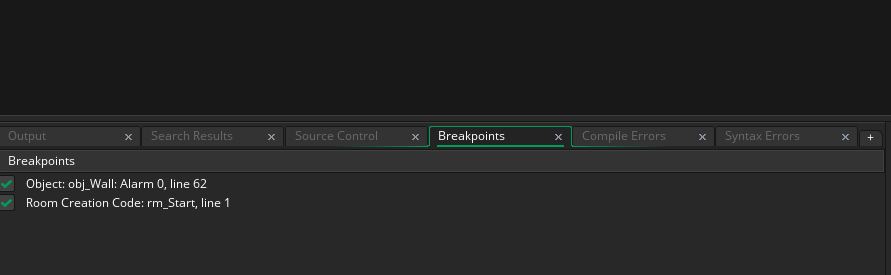
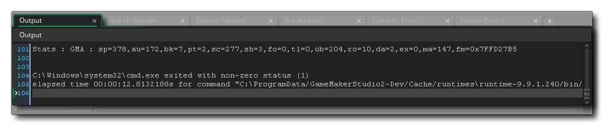

Wenn Sie ein Projekt zum ersten Mal in GameMaker Studio 2 öffnen, wird das Ausgabedock am unteren Bildschirmrand angezeigt. Dieses angedockte Fenster enthält verschiedene Registerkarten, die abhängig von bestimmten Umständen die verschiedenen Ausgabeinformationen für Ihr Projekt anzeigen. Das Dock kann geschlossen werden, indem Sie auf die Schaltfläche am unteren Rand der IDE klicken, und Sie können klicken  und ziehen Sie eine beliebige Registerkarte im angedockten Fenster in ein anderes Dock, um seine Position zu ändern, oder Sie können klicken
und ziehen Sie eine beliebige Registerkarte im angedockten Fenster in ein anderes Dock, um seine Position zu ändern, oder Sie können klicken  auf der Dock-Inhaltsleiste und ziehen Sie sie in den Arbeitsbereich, um ein eigenständiges Fenster zu erstellen:
auf der Dock-Inhaltsleiste und ziehen Sie sie in den Arbeitsbereich, um ein eigenständiges Fenster zu erstellen:

Du kannst auch  Ziehen Sie eine angedockte Ausgabe in eine andere, um ein Ausgabefenster mit geteilten Ansichten zu erstellen, wie im folgenden Beispiel gezeigt, in dem die beiden Fehlerausgaben auf derselben Registerkarte platziert wurden (Sie können das Klicken verlangsamen)
Ziehen Sie eine angedockte Ausgabe in eine andere, um ein Ausgabefenster mit geteilten Ansichten zu erstellen, wie im folgenden Beispiel gezeigt, in dem die beiden Fehlerausgaben auf derselben Registerkarte platziert wurden (Sie können das Klicken verlangsamen)  auf einem Tab, um seinen Namen zu ändern):
auf einem Tab, um seinen Namen zu ändern):
Sie können den Standardzustand der IDE jederzeit wiederherstellen, indem Sie im Layoutfenster auf Layout zurücksetzen klicken und im Fenstermenü alle geschlossenen Registerkarten erneut öffnen. Die standardmäßigen angedockten Registerkarten werden im Folgenden erläutert:

Das egenral Ausgabefenster ist, wo alle Compiler ausgegeben wird, sowie alle Nachrichten angezeigt, die Sie zu Ihrem Spiel hinzugefügt haben können unter Verwendung der show_debug_message Funktion. Die meisten der ersten Informationen, die gezeigt werden, sind einfach Debug-Informationen darüber, wie das Spiel gebaut wird und können daher im Allgemeinen ignoriert werden. Wenn Sie jedoch ein Problem bei der Erstellung Ihres Projekts für eine Zielplattform haben, kann es hilfreich sein, die Ursache zu finden und Informationen für den Support bereitzustellen, sollten Sie sich mit ihnen in Verbindung setzen. Beachten Sie, dass Sie die Anzahl der angezeigten Informationen im Abschnitt Kompilieren der Einstellungen ändern können.
Sie können das Such- und Ersetzen-Fenster mit der Tastenkombination öffnen
/
+
+ " F "oder gehen Sie zum Menü " Bearbeiten ". Sobald Sie Ihre Suchbegriffe eingegeben haben, werden die Ergebnisse in diesem Fenster mit folgendem Format angezeigt:
[object] - [event] - [Line Number]: [search string]
Wenn der Suchbegriff in einem Skript gefunden wird, ist es einfach:
[script] - [Line Number]: [search string]
Sie können dann doppelklicken
auf einem der zurückgegebenen Einträge, um das angegebene Asset an der richtigen Position zum Bearbeiten zu öffnen.
In diesem Fenster werden alle Ausgaben für Ihr SCM-Plugin angezeigt. Weitere Informationen zum Einrichten der Quellcodeverwaltung finden Sie hier.
Haltepunkte sind Orte in deinem Spielcode oder DnD™, wo du GameMaker Studio 2 angewiesen hast, den Lauf des Projekts im Debug-Modus anzuhalten. Sie können einen Haltepunkt überall in der Spielschleife mit der Taste hinzufügen " F9 Wenn Sie dies tun, wird es auf dieser Registerkarte angezeigt. Sie können sie aktivieren und deaktivieren (ohne sie zu entfernen), indem Sie auf das Kontrollkästchen auf der linken Seite klicken und wenn Sie die rechte Maustaste verwenden
Auf einem erhalten Sie dann ein kleines Menü, mit dem Sie den Haltepunkt entfernen oder das Code- / DnD™ -Fenster öffnen können, in dem sich der Haltepunkt befindet.
Es gibt Situationen, in denen Ihr Spiel auf einen Fehler trifft, den der Syntax-Checker möglicherweise nicht erkennen konnte oder der damit zusammenhängt, wie Sie die Kompilierungsoptionen eingerichtet haben. Wenn dies passiert, zeigt Ihr Spiel Ihnen einen Syntaxfehler oder einen Compilerfehler (oder beides) und hört auf zu laufen. Alle Compiler-Fehler werden ebenfalls im Fenster Allgemeine Ausgabe angezeigt, aber sie werden auch hier separat aufgelistet (da sie im Rest der allgemeinen Ausgabe verloren gehen können), und Syntaxfehler werden aktualisiert, wenn Sie Ihren Code schreiben (Anmerkung Es wird eine kurze Pause zwischen dem Eingeben von etwas und irgendwelchen Fehlern geben, die in diesem Fenster erscheinen, um zu verhindern, dass Fehler für unvollendeten Code gemeldet werden.
Die Compiler-Fehlermeldungen folgen alle demselben Format:
[object] - [event] - [Line Number]: [error string]
Wenn der Suchbegriff in einem Skript gefunden wird, ist es einfach:
[script] - [Line Number]: [error string]
Sie können dann doppelklicken